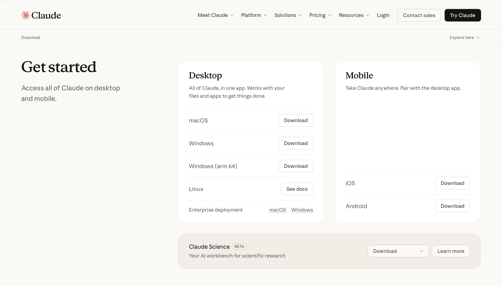
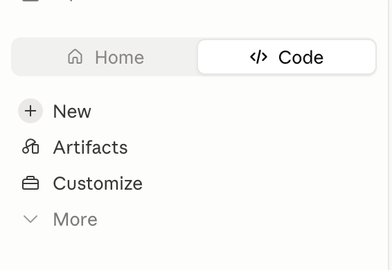
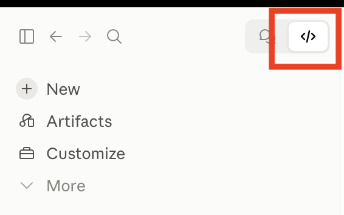
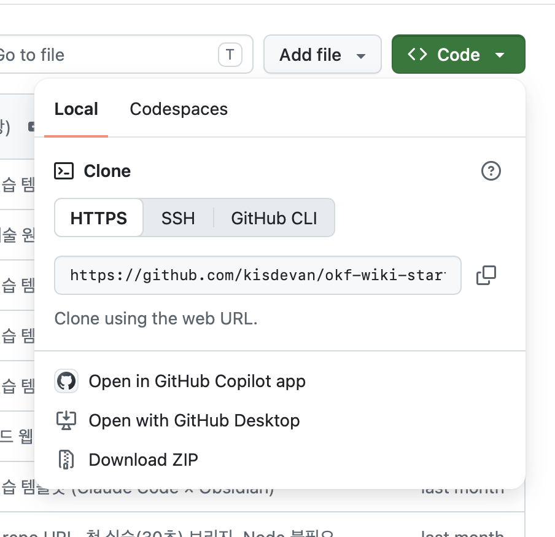
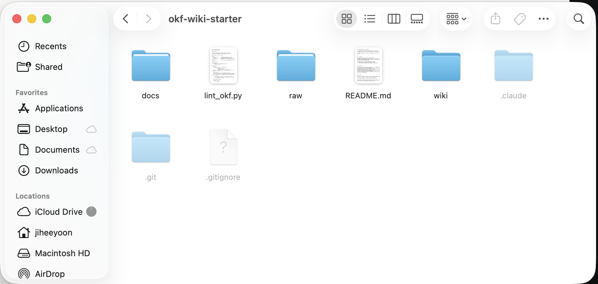
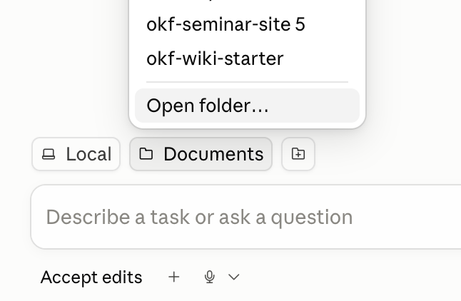
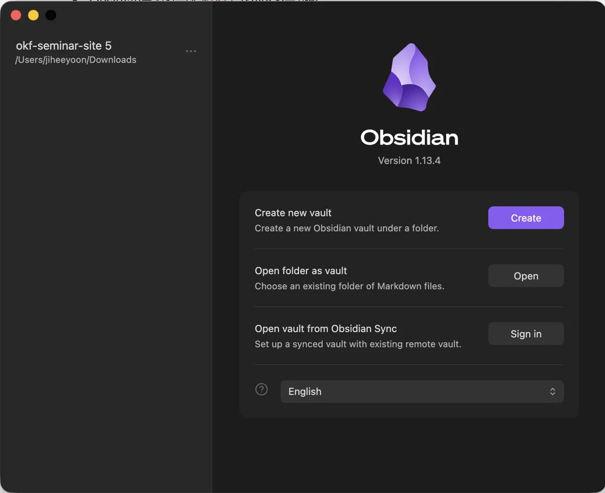
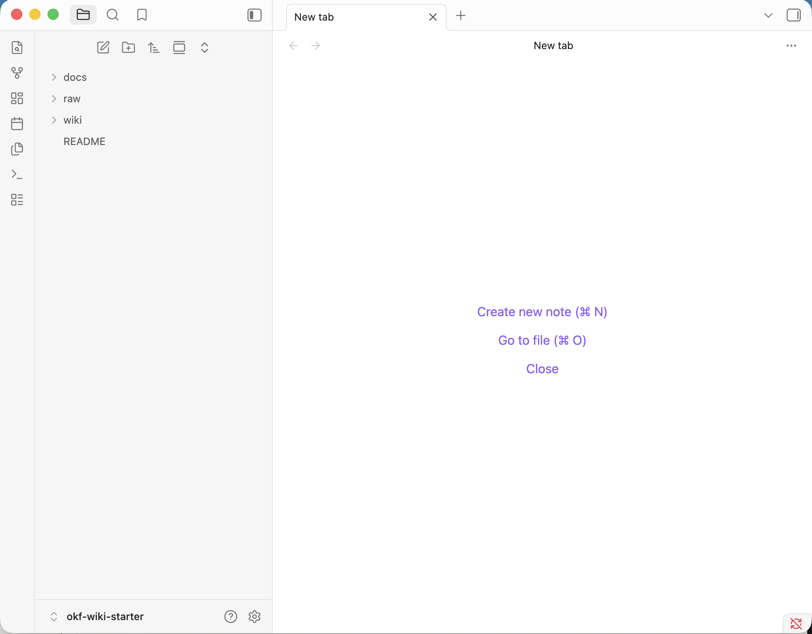
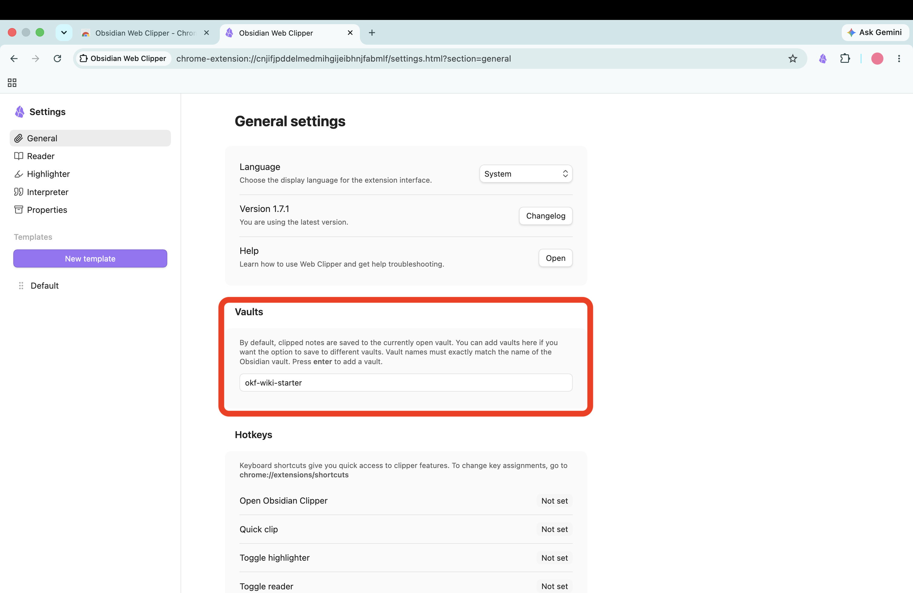
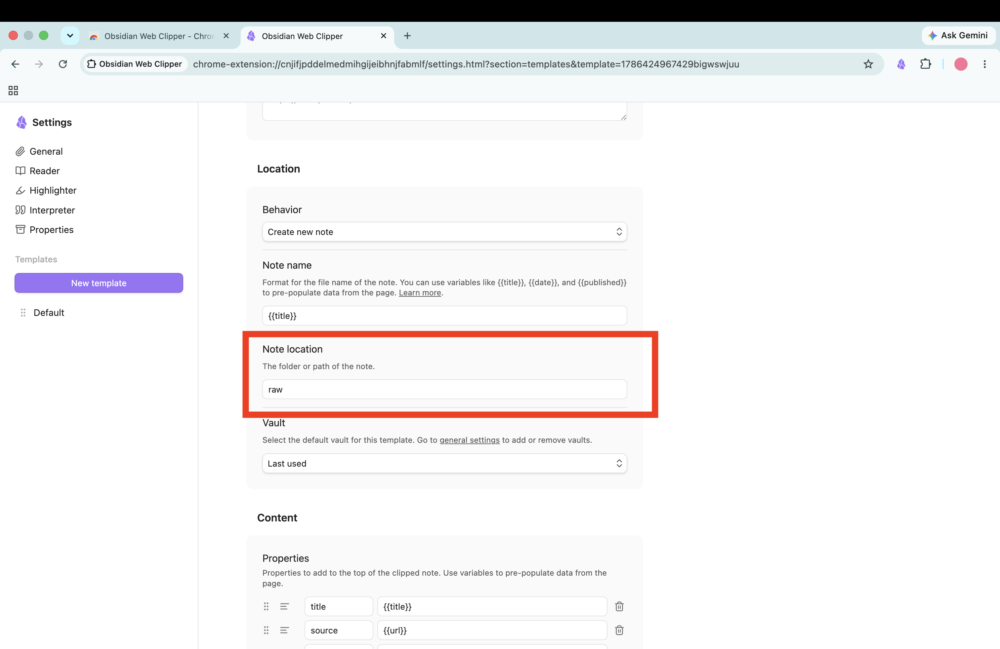

② 클로드 환경 세팅
이런 걸 배워요
이런 걸 해봐요
네 가지가 각각 한 가지 일을 맡습니다
| 도구 | 오늘 맡는 역할 |
|---|---|
| Claude 데스크톱 앱 | 자료를 읽고 개념으로 정리하는 역할. 오늘 실제로 일을 하는 쪽입니다. |
| 실습 폴더 | 내 지식 창고. 자료와 위키가 여기에 쌓이고, AI는 이 폴더를 기준으로 일합니다. |
| Obsidian | 정리 결과가 어떻게 이어졌는지 눈으로 보는 역할. 그래프를 그려 줍니다. |
| 웹 클리퍼 | 웹에서 본 글을 창고에 담는 역할. 브라우저 버튼 하나입니다. |
Claude 데스크톱 앱 설치하고 로그인
자료를 읽고 개념으로 정리하는 일을 맡을 도구입니다.

- 운영체제에 맞는 설치 파일을 내려받습니다
맥은 dmg, 윈도우는 exe. 윈도우는 Git도 함께 설치해야 합니다.
- 설치 후 배포받은 계정으로 로그인합니다
왼쪽 위의 Code 탭을 누릅니다


내 컴퓨터의 파일을 직접 다루는 것은 Code 탭뿐입니다. 오늘 실습은 전부 여기서 진행합니다.
Git 설치하기
맥은 이미 들어 있습니다. 윈도우만 git-scm.com 에서 받아 설치합니다. 설치 중 선택지는 전부 기본값으로 둡니다.
필요한 이유
윈도우에서는 Code 탭이 내 컴퓨터의 폴더를 열려면 Git이 있어야 합니다. 맥에는 기본으로 들어 있습니다.
설치만 하면 됩니다
오늘 git을 직접 다룰 일은 없습니다. 설치 후에는 Claude 앱을 한 번 다시 시작합니다.
Git파일이 언제 어떻게 바뀌었는지 기록해 두는 프로그램. 오늘은 직접 쓰지 않지만, 윈도우에서는 Code 탭이 내 컴퓨터의 폴더를 열 때 이 프로그램을 필요로 합니다.
저장소파일 묶음을 인터넷에 올려 두고 여럿이 같이 쓰는 공간. GitHub이 그중 가장 널리 쓰이는 서비스입니다. repository, repo
보관함Obsidian이 관리할 폴더 하나를 가리키는 말. 특별한 형식이 아니라 그냥 평범한 폴더입니다. vault
확장 프로그램브라우저에 기능을 덧붙이는 작은 프로그램. 설치하면 주소창 옆에 아이콘이 하나 생깁니다. extension
플러그인Obsidian 안에 기능을 덧붙이는 프로그램. 확장 프로그램과 같은 개념인데, 브라우저가 아니라 Obsidian에 붙습니다.
제한 모드외부에서 만든 플러그인을 막아 두는 기본 설정. 설치하려면 이 모드를 먼저 꺼야 합니다.
실습 폴더 내려받기
오늘 쓸 지식 창고의 처음 모습입니다. 스킬, 예제 자료, 점검 도구가 들어 있습니다.

- 저장소 주소로 들어갑니다
- 초록색 Code 버튼 → Download ZIP
찾기 쉬운 곳에 압축을 풉니다

바탕화면이나 문서 폴더처럼 찾기 쉬운 곳에 풉니다. raw/ 에는 예제 두 개가 들어 있고, wiki/ 는 비어 있습니다.
해당 폴더를 엽니다

이 폴더를 고르는 것은 내 지식 창고를 정하는 일입니다
앞으로 이 폴더 안에서 모든 일이 일어납니다.
여기에 쌓입니다
웹에서 담은 자료도, AI가 정리한 위키도 전부 이 폴더 안에 들어갑니다.
AI가 보는 범위
AI는 이 폴더를 기준으로 읽고 씁니다. 밖의 파일은 건드리지 않습니다.
폴더는 그대로 남습니다
다른 AI 도구로 갈아타도, 프로그램을 지워도, 폴더와 그 안의 마크다운 파일은 남습니다.
Obsidian 설치하고 같은 폴더 열기
정리 결과가 어떻게 이어졌는지 눈으로 보는 역할입니다. 정리를 하는 것은 아닙니다.


웹 클리퍼 설치하고 저장 위치 지정
웹에서 본 글을 창고에 담는 역할을 하는 브라우저 확장 프로그램입니다. obsidian.md/clipper 에서 설치하고, 저장 위치를 raw 로 맞춰 둡니다.


여기까지 되면 준비 끝입니다
- Claude 앱의 Code 탭에서 실습 폴더가 열려 있다
- Obsidian에 같은 폴더가 열려 있고, 그래프 뷰가 켜져 있다
- 브라우저에 웹 클리퍼 아이콘이 보인다
- 웹 클리퍼 저장 위치가 raw 로 지정되어 있다
옵시디언 커뮤니티 플러그인
앞 단계를 마치신 분들을 위한 추가 내용입니다. 설정 → 커뮤니티 플러그인 → 제한 모드 해제 → 탐색에서 검색 → 설치.
| 플러그인 | 무엇이 좋아지나 |
|---|---|
| Dataview | 프론트매터로 노트를 한 번에 모아 봅니다. type이 같은 문서를 전부 목록으로 뽑을 수 있습니다. |
| Templater | 새 노트에 프론트매터를 자동으로 넣어 줍니다. |
| Omnisearch | 노트가 많아졌을 때 더 똑똑하게 검색합니다. PDF 안까지 찾습니다. |